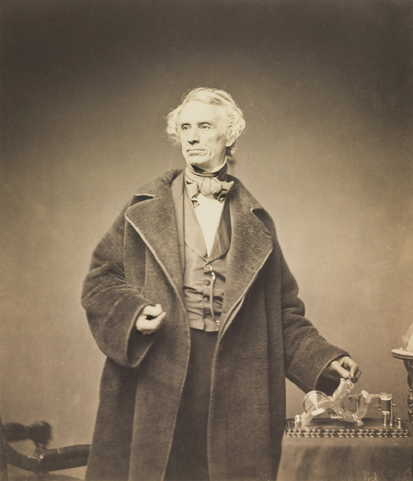
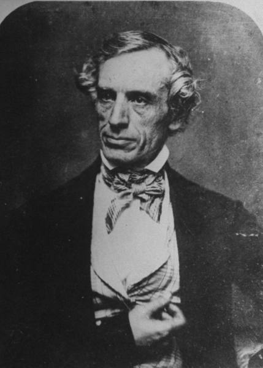
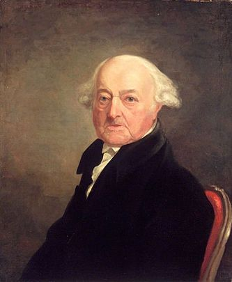

Prototypes & production
Morse sought government funding and used that to build the single wire system as a proof of concept. This project was successful and lead to commercial development of a nationwide telegraph network.
Patents and legal issues
The multi-wire system went into production in 1837 while Morse’s single wire system emerged in 1838. The multi-wire system being more expensive lost to Morse’s ideas. Lawsuits for patent rights went on for 10 years until Morse finally won.
Inspired by tragedy
While Morse was painting in New York, a horse messenger delivered a letter from his father in New Haven, Connecticut that read, "Your dear wife is convalescent". The next day he received a letter from his father detailing his wife's sudden death. By the time he got home - she was buried. Heartbroken that for days he was unaware of his wife's failing health and her death, he decided to explore a means of rapid long distance communication.
An artist?
Morse, upon graduating from Yale, went on to become a noted painter. He painted the portraits of John Adams & James Monroe, the second and fifth American Presidents. His work as an artist took him to England and Europe. There are several of his paintings available on the Wikipedia page on Samuel FB Morse.